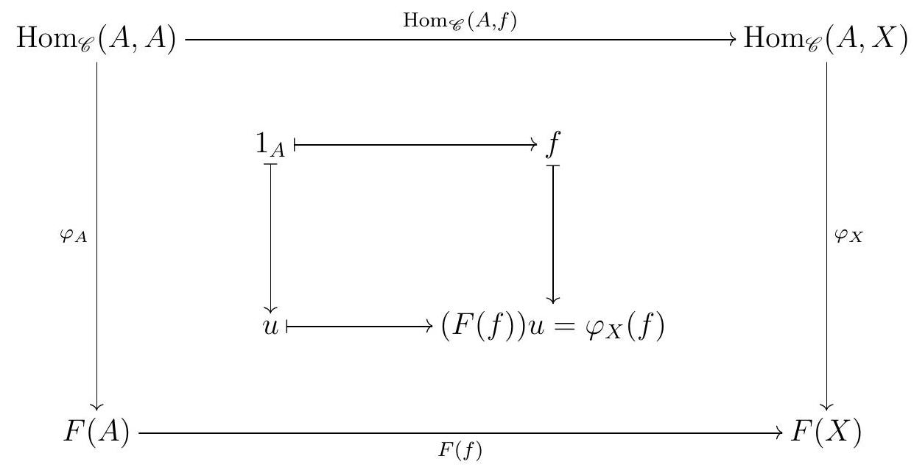
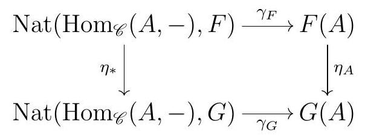
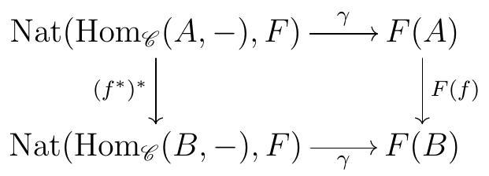

Let \(\varphi\) be a natural transformation in \(\operatorname{Nat}\left(\operatorname{Hom}_{\mathscr{C}}(A,-), F\right)\text{.}\) The proof of the Yoneda Lemma is essentially the following diagram:

Our bijection will be defined by \(\gamma(\varphi):=\varphi_{A}\left(1_{A}\right)\text{.}\) We should first check that this makes sense: arrows in Set are just functions between sets, and so \(\varphi_{A}\) is a function of sets \(\operatorname{Hom}_{\mathscr{C}}(A, A) \longrightarrow F(A)\text{.}\) Also, \(\operatorname{Hom}_{\mathscr{C}}(A, A)\) is a set that contains at least the element \(1_{A}\text{,}\) and \(\varphi_{A}\left(1_{A}\right)\) is some element in the set \(F(A)\text{.}\)
Given any fixed \(f \in \operatorname{Hom}_{\mathscr{C}}(A, X)\text{,}\) the fact that \(\varphi\) is a natural transformation translates into the outer commutative diagram. In particular, the maps of sets \(F(f) \varphi_{A}\) and \(\varphi_{X} \operatorname{Hom}_{\mathscr{C}}(A, f)\) coincide, and must in particular take \(1_{A}\) to the same element in \(F(X)\text{.}\) This is the commutativity of the inner diagram, with \(u:=\varphi_{A}\left(1_{A}\right)\text{.}\)
The commutativity of the diagram above says that \(\varphi\) is completely determined by \(\varphi_{A}\left(1_{A}\right)\text{,}\) since for any other object \(X\) in \(\mathscr{C}\) and any arrow \(f \in \operatorname{Hom}_{\mathscr{C}}(A, X)\text{,}\) we necessarily have \(\varphi_{X}(f)=F(f) \varphi_{A}\left(1_{A}\right)\text{.}\) In particular, our map \(\gamma(\varphi)=\varphi_{A}\left(1_{A}\right)\) is injective. Moreover, note that each choice of \(u \in F(A)\) gives rise to a different natural transformation \(\varphi\) by setting \(\varphi_{X}(f)=F(f) u\text{.}\) So our map \(\gamma\) is indeed a bijection.
We now have two naturality statements to prove. Naturality in the functor means that given a natural isomorphism \(\eta: F \longrightarrow G\text{,}\) the diagram

commutes. Given a natural transformation \(\varphi\) between \(\operatorname{Hom}_{\mathscr{C}}(A,-)\) and \(F\text{,}\)
\begin{equation*}
\begin{array}{rlr}
\eta_{A} \circ \gamma_{F}(\varphi) & =\eta_{A}\left(\varphi_{A}\left(1_{A}\right)\right) & \text { by definition of } \gamma \\
& =(\eta \circ \varphi)_{A}\left(1_{A}\right) & \text { by definition of composition of natural transformations } \\
& =\gamma_{G}(\eta \circ \varphi) & \text { by definition of } \gamma \\
& =\gamma_{G} \circ \eta_{*}(\varphi) & \text { by definition of } \eta_{*}
\end{array}
\end{equation*}
so commutativity does hold. Naturality on the object means that given an arrow \(f: A \longrightarrow B\text{,}\) the diagram

commutes. Given a natural transformation \(\varphi\) between \(\operatorname{Hom}_{\mathscr{C}}(A,-)\) and \(F\text{,}\)
\begin{equation*}
F(f) \circ \gamma_{A}(\varphi)=F(f)\left(\varphi_{A}\left(1_{A}\right)\right)
\end{equation*}
while
\begin{equation*}
\gamma_{B} \circ\left(f^{*}\right)^{*}(\varphi)=\gamma_{B}\left(\varphi \circ f^{*}\right)=\left(\varphi \circ f^{*}\right)_{B}\left(1_{B}\right)
\end{equation*}
Now notice that
\begin{equation*}
\begin{array}{r}
\operatorname{Hom}_{\mathscr{C}}(B, B) \stackrel{f^{*}}{\longrightarrow} \operatorname{Hom}_{\mathscr{C}}(A, B) \stackrel{\varphi_{B}}{\longrightarrow} F(B) . \\
1_{B} \longmapsto f \longmapsto \varphi_{B}(f)
\end{array}
\end{equation*}
Let’s look back at the big commutative diagram we started our proof with: it says in particular that \(\varphi_{B}(f)=F(f)\left(\varphi_{A}\left(1_{A}\right)\right)\text{.}\) So commutativity does hold, and we are done.